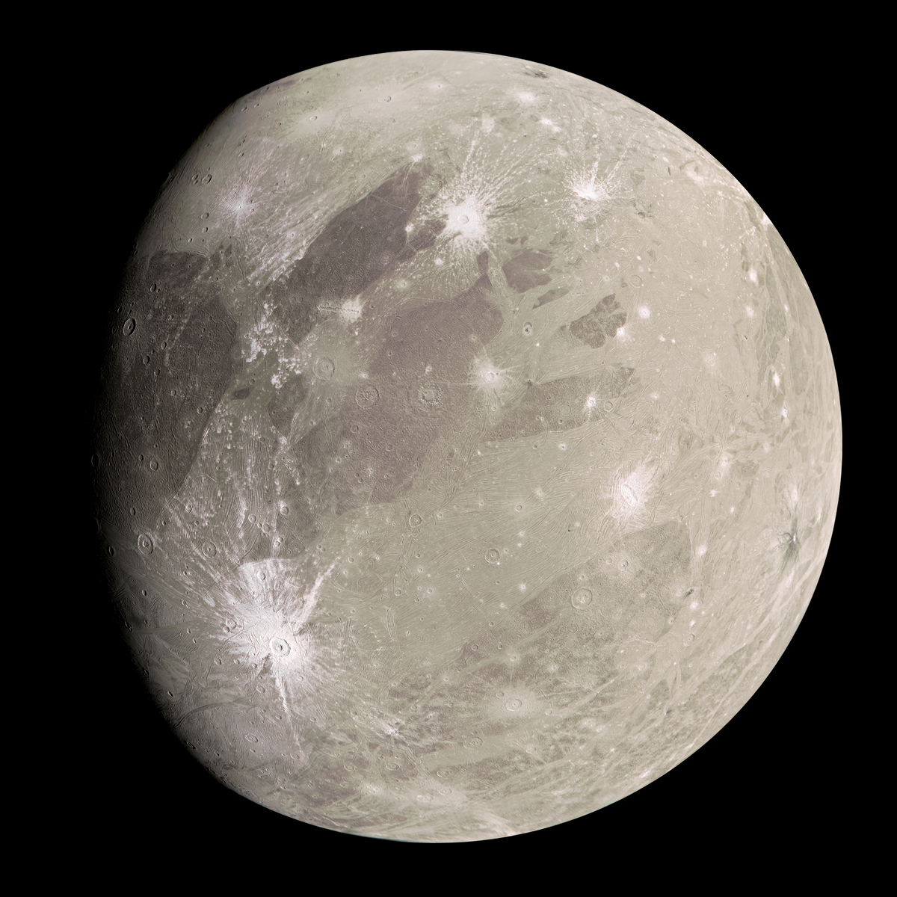

Jupiter is the fifth planet from our Sun and is, by far, the largest planet in the solar system – more than twice as massive as all the other planets combined. Jupiter's stripes and swirls are actually cold, windy clouds of ammonia and water, floating in an atmosphere of hydrogen and helium. Jupiter’s iconic Great Red Spot is a giant storm bigger than Earth that has raged for hundreds of years. Jupiter is surrounded by dozens of moons. Jupiter also has several rings, but unlike the famous rings of Saturn, Jupiter’s rings are very faint and made of dust, not ice.
Jupiters' structure is as same as Suns'- mostly helium and hydrogen. Deep in the atmosphere, pressure and temperature increase, compressing the hydrogen gas into a liquid. This gives Jupiter the largest ocean in the Solar System-an ocean made of liquid hydrogen instead of water. Jupiter has a central core of solid material or if it may be a thick, super-hot and dense soup. It could be up to 50,000 degree Celsius down there, made mostly of iron and silicate minerals.

Jupiter's appearance is a tapestry of colorful cloud bands and spots. The gas planet likely has three distinct cloud layers in its "skies" that, taken together, span about 44 miles (71 kilometers). The top cloud is probably made of ammonia ice, while the middle layer is likely made of ammonium hydrosulfide crystals.
The innermost layer may be made of water ice and vapor. With no solid surface to slow them down, Jupiter's spots can persist for many years. Stormy Jupiter is swept by over a dozen prevailing winds, some reaching up to 335 miles per hour (539 kilometers per hour) at the equator. The Great Red Spot, a swirling oval of clouds twice as wide as Earth, has been observed on the giant planet for more than 300 years.

The Great Red Spot
Jupiter has the shortest day in the solar system. One day on Jupiter takes only about 10 hours (the time it takes for Jupiter to rotate or spin around once), and Jupiter makes a complete orbit around the Sun (a year in Jovian time) in about 12 Earth years (4,333 Earth days).
Its equator is tilted with respect to its orbital path around the Sun by just 3 degrees. This means Jupiter spins nearly upright and does not have seasons as extreme as other planets do.

Surprised right! Yess Jupiter do have rings but very faint, Jupiter's ring system may be formed by dust kicked up as interplanetary meteoroids smash into the giant planet's small innermost moons.
With four large moons and many smaller moons, Jupiter forms a kind of miniature solar system. Jupiter has 53 confirmed moons and 26 provisional moons awaiting confirmation of discovery. Moons are named after they are confirmed.
Jupiter's four largest moons—Io, Europa, Ganymede, and Callisto—were first observed by the astronomer Galileo Galilei in 1610 using an early version of the telescope. These four moons are known today as the Galilean satellites, and they're some of the most fascinating destinations in our solar system.
IO : Jupiter's moon Io is the most volcanically active world in the Solar System, with hundreds of volcanoes, some erupting lava fountains dozens of miles (or kilometers) high. Io is caught in a tug-of-war between Jupiter's massive gravity and the smaller but precisely timed pulls from two neighboring moons that orbit farther from Jupiter—Europa and Ganymede.

Europa : Europa may be the most promising place in our solar system to find present-day environments suitable for some form of life beyond Earth. Like Earth, Europa is thought to also contain a rocky mantle and iron core. Europa is named for a woman who, in Greek mythology, was abducted by the god Zeus — Jupiter in Roman mythology.

Ganymede : Jupiter's moon Ganymede is the largest moon in our solar system and the only moon with its own magnetic field. The magnetic field causes auroras, which are ribbons of glowing, electrified gas, in regions circling the moon’s north and south poles.


1. Jupiter Is The Fastest Spinning Planet In The Solar System.
2. Europa contains a large liquid water ocean heated by its corde beneath the frozen icy shell – making it a world that may be able to sustain human life.
3. Ganymede is named after Trojan boy that Zeus took away to be the cup bearer for the gods.
4. Leda is the ninth moon from Jupiter and is also the smallest moon with a mean diameter of 16 km (9.9 miles).
5. A day on Jupiter only lasts 9 hours and 55 minutes.